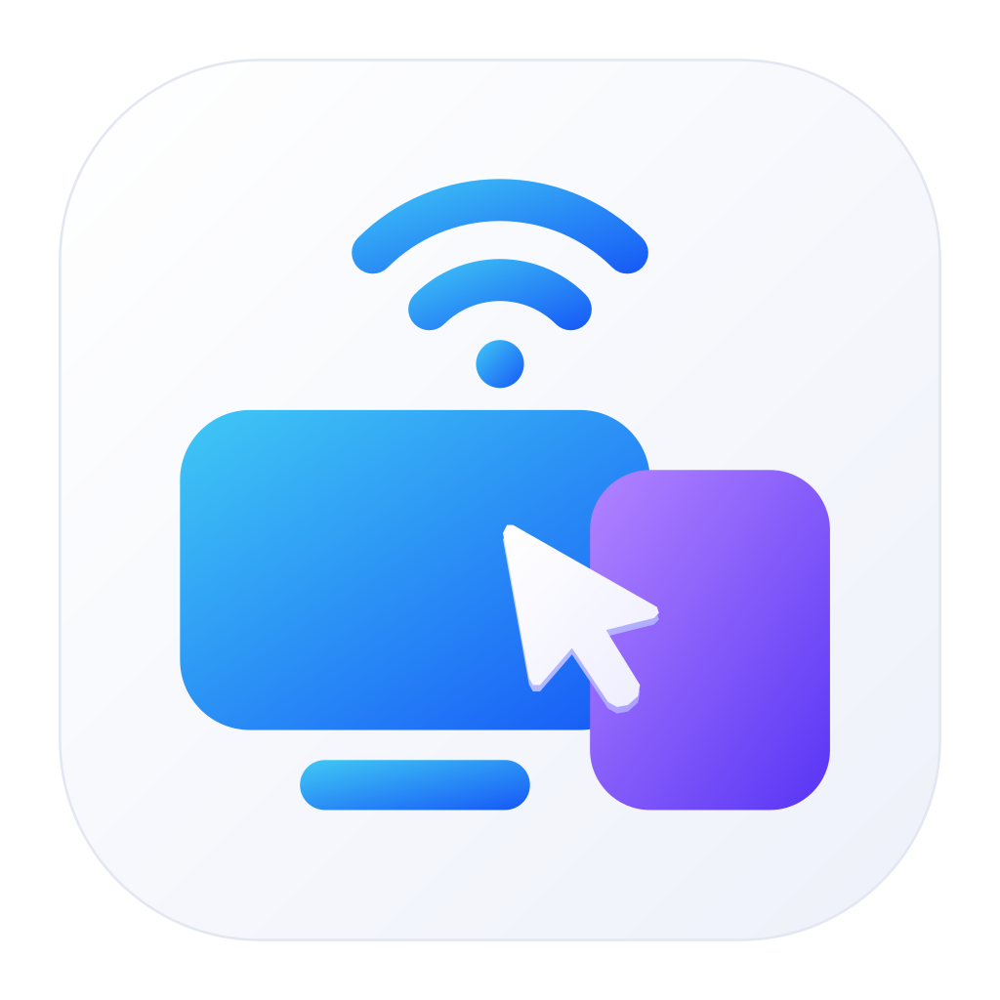

01 / 03跨屏键鼠
越过边缘。
继续你的节奏。
鼠标轻轻一滑，键盘随之切换。按你的桌面摆放设备，让操作顺着直觉走。
少一点切换，多一点心流
从电脑到手机，从一个想法到下一个。熟悉的操作，自然延伸到每一台设备。
01 / 03跨屏键鼠
鼠标轻轻一滑，键盘随之切换。按你的桌面摆放设备，让操作顺着直觉走。
02 / 03共享剪贴板
文字在组内设备间同步。复制一个灵感，换一块屏幕，继续刚才的思路。
03 / 03文件流转
跨屏分享文件与文件夹，先抵达对方的暂存区，再由你决定何时接收、存在哪里。
功能演示示意
滚动，探索下一种默契
更完整的协作体验
桌面控制
从电脑操作 Android，也能用手机远程操作电脑。让你需要的屏幕，来到眼前。
Android 受控需配置 ADB 或 Root 助手。
灵活连接
局域网连接之外，支持电脑与 Android 的 USB 辅助通道。让连接适应你的工作方式。
USB 辅助需已信任的调试连接。
本地连接，安心协作
无需云端账号，设备通过局域网发现彼此。动态配对码或二维码建立信任，加密连接承载每一次协作。
组内功能仍受系统权限与已保存的设备授权限制。

让下一次切换，更自然
选择你的平台，开始探索 LanLink。
0.3.45 开发预览当前为开发预览版。安装与构建方式请参阅项目说明，部分能力仍在持续验证。
无需云端账号。同一局域网内即可创建组、发现设备并配对。获取软件与依赖时可能需要互联网，日常设备协作使用本地连接。
支持 Windows、macOS 与 Android。Windows 和 Mac 可作为键鼠主设备，Android 可以被电脑控制，也可以操作电脑。具体系统要求与验证范围以安装说明为准。
电脑控制 Android、后台剪贴板等功能需要就绪的 ADB授权 或 ROOT 一键授权。非 Root 设备首次需在手机上允许 USB 调试，数据线连接电脑端自动授权即可。授权之后手机不重启即可一直使用，若手机重启后可能需要重新连接已信任的电脑重新授权。